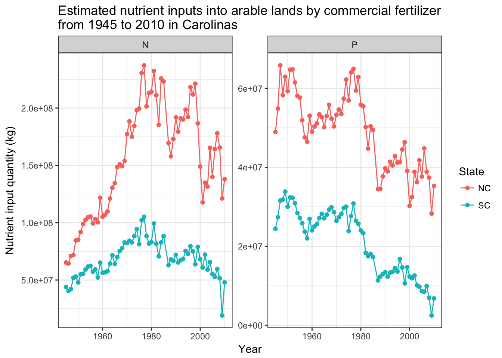
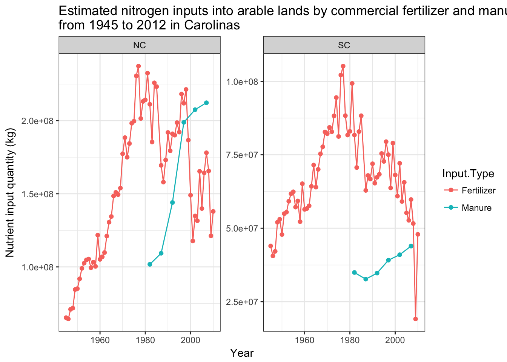

Introduction of usfertilizer, an R package
Wenlong Liu
2018-03-23
Source:vignettes/Introduction.Rmd
Preface
Nutrients as commercial fertilizer is an important input to soil water systems, especially in agricultural fields. It is critical to, at least roughly, estimate the quantity of fertilizer application in the watershed, to conduct further evaluation of water quality from certain watersheds. Since 1990, folks from United States Geological Service (USGS) have investigated considerable time, manpower and efforts to estimate the fertilizer application in county scales. Based on the sales data of commercial fertilizer, USGS researchers allocated the sold fertilizer to each county based on agricultural production, arable land, growing seasons, etc. Further details are available through coming tutorials and the cited websites. Although there is no perfect way to estimate the nutrient application in watershed, the datasets from USGS have been carefully reviewed and can serve as an indication of nutrients input from commercial fertilizer. In addition, please employ this datasets at watershed or regional scales. Please note that USGS does not endorse this package and this package does not include manure data. Also data from 1986 is not available for now.
Installment
For now, you can install it via my Github Repsotory.
# install.package("devtools") # In case you have not installed it.
devtools::install_github("wenlong-liu/usfertilizer")In the future, I will try to submit it for cran. You can also install it via:
install.packages("usfertilizer")
# not available yet.Get started
1.2 Summary of the dataset
The dataset, named by us_fertilizer_county, contains 582012 observations and 11 variables. Details are available by using ?us_fertilizer_county.
glimpse(us_fertilizer_county)
#> Observations: 582,012
#> Variables: 11
#> $ FIPS <chr> "01001", "01003", "01005", "01007", "01009", "01011...
#> $ State <chr> "AL", "AL", "AL", "AL", "AL", "AL", "AL", "AL", "AL...
#> $ County <chr> "Autauga", "Baldwin", "Barbour", "Bibb", "Blount", ...
#> $ ALAND <dbl> 1539582278, 4117521611, 2291818968, 1612480789, 166...
#> $ AWATER <dbl> 25775735, 1133190229, 50864716, 9289057, 15157440, ...
#> $ INTPTLAT <dbl> 32.53638, 30.65922, 31.87067, 33.01589, 33.97745, 3...
#> $ INTPTLONG <dbl> -86.64449, -87.74607, -85.40546, -87.12715, -86.567...
#> $ Quantity <dbl> 1580225, 6524369, 2412372, 304592, 1825118, 767573,...
#> $ Year <chr> "1987", "1987", "1987", "1987", "1987", "1987", "19...
#> $ Fertilizer <chr> "N", "N", "N", "N", "N", "N", "N", "N", "N", "N", "...
#> $ Farm.Type <chr> "farm", "farm", "farm", "farm", "farm", "farm", "fa...Examples
Example 1: Find out the top 10 counties with most nitrogen appliation in 1990.
# plot the top 10 nitrogen application in year 1990.
# Reorder to make the plot more cleanner.
year_plot = 2008
us_fertilizer_county %>%
filter(Fertilizer == "N" & Year == year_plot) %>%
top_n(10, Quantity) %>%
ggplot(aes(x=reorder(paste(County,State, sep = ","), Quantity), Quantity, fill = Quantity))+
scale_fill_gradient(low = "blue", high = "darkblue")+
geom_col()+
ggtitle(paste("Top 10 counties with most fertilizer application in the year of", year_plot)) +
coord_flip()+
theme_bw()
Example 2: Find out the top 10 states with most nitrogen appliation in 1980.
# plot the top 10 states with P application in year 1980.
# Reorder to make the plot more cleanner.
year_plot = 1980
us_fertilizer_county %>%
filter(Fertilizer == "P" & Year == 1980) %>%
group_by(State) %>%
summarise(p_application = sum(Quantity)) %>%
as.data.frame() %>%
top_n(10, p_application) %>%
ggplot(aes(x=reorder(State, p_application), p_application))+
scale_fill_gradient(low = "blue", high = "darkblue")+
geom_col()+
ggtitle(paste("Top 10 States with most Phosphrus application in the year of", year_plot)) +
scale_y_continuous(name = "Phosphrus from commecial fertilization (kg)")+
scale_x_discrete(name = "States")+
theme_bw()+
coord_flip()
Example 3: Plot the N and P input into farms for NC and SC from 1945 to 2010
year_plot = seq(1945, 2010, 1)
states = c("NC","SC")
us_fertilizer_county %>%
filter(State %in% states & Year %in% year_plot &
Farm.Type == "farm") %>%
group_by(State, Year, Fertilizer) %>%
summarise(Quantity = sum(Quantity)) %>%
ggplot(aes(x = as.numeric(Year), y = Quantity, color=State)) +
geom_point() +
geom_line()+
scale_x_continuous(name = "Year")+
scale_y_continuous(name = "Nutrient input quantity (kg)")+
facet_wrap(~Fertilizer, scales = "free", ncol = 2)+
ggtitle("Estimated nutrient inputs into arable lands by commercial fertilizer\nfrom 1945 to 2010 in Carolinas")+
theme_bw()
Lisence
GPL
us_fertilizer_county %>%
select(Year) %>%
group_by(Year) %>%
filter(row_number() ==1) %>%
arrange(Year)
#> # A tibble: 68 x 1
#> # Groups: Year [68]
#> Year
#> <chr>
#> 1 1945
#> 2 1946
#> 3 1947
#> 4 1948
#> 5 1949
#> 6 1950
#> 7 1951
#> 8 1952
#> 9 1953
#> 10 1954
#> # ... with 58 more rows
Comments and Questions.
If you have any problems or questions, feel free to open an issue here.